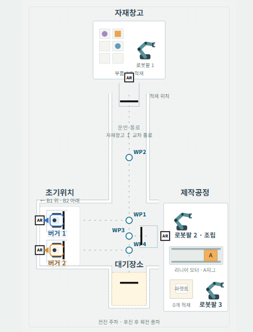

FIRMWARE · EMBEDDED · ROBOTICS
오은지
로봇 · 임베디드 펌웨어 개발자명령을 움직임으로,
움직임을 데이터로.
센서 입력부터 모터 제어, ROS 2 연동까지.
하드웨어와 소프트웨어를 잇는 펌웨어를 만듭니다.
TECH STACK
구현에 사용한 기술
EMBEDDED
STM32 · STM32CubeIDE · HAL · FreeRTOS
MOTOR CONTROL
PID · PWM · Encoder · DC Motor · DYNAMIXEL
COMMUNICATION
UART · micro-ROS · ROS 2 연동
경력 · 교육
경력
(주)테트라다인
2025.08 ~ 2026.02 · 근무
교육
대한상공회의소 서울기술교육센터
AI융합 로봇 SW 개발자 · 2026.04 ~ 2026.11 수료 예정
SELECTED WORK
프로젝트04
카드를 클릭해 담당 역할과 구현 과정을 확인하세요.
SMART PLANT / PROCESS MAP

스마트플랜트 공정 배치도스마트플랜트
상위 주행 명령을 실제 구동으로 연결하는
모터·센서 제어와 ROS 2 연동.
MY ROLE 주행로봇 펌웨어 →
 HUMAN INTENT + OBSTACLE AVOIDANCE
HUMAN INTENT + OBSTACLE AVOIDANCE안내견 로봇
손잡이의 기울기를 따라 움직이고,
장애물 앞에서는 회피 명령을 우선합니다.
MY ROLE 전체 로직 · 모터 제어 →
 RC CAR / ENCODER + PID
RC CAR / ENCODER + PIDRC Car with Joystick
조이스틱 입력으로 목표 RPM을 설정하고,
엔코더 피드백으로 모터 속도를 제어합니다.
MY ROLE PID 기반 모터 속도 제어 →
PLC / MINI PROJECTPROGRAMMABLE LOGIC CONTROLLER
PLC 프로젝트
PLC 미니프로젝트 소개.
실제 동작을 시연 영상으로 확인하세요.
PROJECT NOTE 간단한 소개 페이지 →